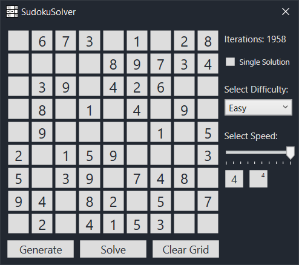
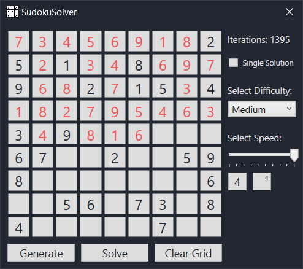

Sagit Bolat
Software Developer
Software Developer
The engine consists of four main modules each of which is a seperate compilation unit.
The engine also includes a number of header-only libraries. These libraries are slotted into the main compilation unit, as they are very lightweight and do not influence the compile time to a significant degree.
Piet is a visual programming language that is based on the artistic style of a famous Dutch painter - Piet Mondrian. In this language, color is used for representing instructions and amounts of pixels for representing data. A single stack is used for data storage. Example Piet programs can be seen here.
The original Piet specification identifies a set of 18 colors to represent instructions. This project is an interpreter that allows the user to provide a custom color scheme to program with. This color scheme is provided in PNG format, with 18 pixels of different colors.
There are 3 major parts that the project consists of:
The sudoku solver is written using the .NET WPF GUI framework. The application is a fully functioning GUI desktop application. Below are two example screenshots. The one on the left is a fully generated sudoku puzzle. The one on the right is a sudoku puzzle in the process of being solved.
 The features of the application are as follows:
Posted on Nov 10, 2022
As I mentioned in the previous post, I used Handmade Hero as a starting point for writing the platform layer for my engine. It is a really great resource that I cannot recommend more highly. That said, I did have some problems... Read more
Posted on Nov 9, 2022
I have been working on my engine for about 5 months now, and it is nowhere close to being finished. I've wrestled with myself on whether I should start logging about it. 5 months is a weird time to start a devlog on a project. It's too late into the project to be a true "My Journey" type of devlog, but its not far enough into the project to be an educational resource. That said, I don't think being 5 months into the project stops me from documenting my journey. I also don't think that just because I don't have 20 years of experience building game engines, I cannot provide some edutcational value... Read more
Posted on Nov 8, 2022
I have long wanted to start some form of a devlog, whether it be in written or video form. At first I thought of video devlogs to be the perfect format. You simply talk into a microphone and show off whatever project you have been working on at the time. However... Read more
Posted on Nov 10, 2022
As I mentioned in the previous post, I used Handmade Hero as a starting point for writing the platform layer for my engine. It is a really great resource that I cannot recommend more highly. That said, I did have some problems with implementation in the series. I wasn't the biggest fan of using the Win32 API, because I wanted to be able to work on Linux, and that meant writing two Platform Layers up-front, which is not something I intended on doing (perhaps in the future I will write an optimized platform layer for all three major OS's, but not for a while). My solution was to use the SDL library to do the cross-platform heavy lifting for me. I was able to isolate the SDL code from the rest of my codebase, so if I want to swap out SDL for Win32, for example, in the future, it will be as easy as writing a Win32 platform layer and replacing the file in the build path.
In this article I will walk through how the platform layer is structured.
Posted on Nov 9, 2022
I should first note that this is NOT my first game engine. My first serious attempt at making an engine was just over a year ago. As is evident from the fact that I am now on my second attempt, the first one did not pan out to be very successful. There was a myriad of reasons for this. The biggest was lack of understanding of the scope of the project. A few months prior to starting, I had completed a college project that involved generating dungeons, and having the user be able to explore them. Me and my partner had implemented a few interactive elements to the dungeon, such as dynamic tile-based lighting, and I felt a surge of inspiration from being able to program a game-like project without an engine.
This is, likely, where my drive to start working on games at a lower level began. I enjoyed having more nuanced control over how the final version behaved. The API that we used for the project allowed us to draw tiles to the screen in a similar way Unity's Tilemap lets the user create tile-based level, but the API allowed pixel perfect placement. This made the screen feel more like a canvas that we got to draw onto, rather than an abstract idea with which one could ony interact indirectly.
Unfortunately, I quickly realized that creating a full game engine from scratch (even with the help of a library to do most heavy platform code for me) was a much deeper commitment than my college projects led me to believe. And so, as I added more and more to my first engine, the project became harder and harder to work on. Looking back, it was clear that my understading of what a game engine is and what it is meant to do was... flawed. It was akin to flayling in the dark, hoping to accidentally bump into the light switch.
My second attempt began after a 5 months-long break. In that time, I spent my time researching and trying to figure out what I did wrong the first time around. Eventually I came back, and started the project over, this time using a more structured approach to writing the engine. I abandoned most things that made my first attempt unweildy (such as heavy use of inheritence heirarchies) and focused on writing a more simple approach. The resulting project was easier to get started on, and maintain.
Today, the engine I am working on is called SkyEngine. This name is temporary, and I don't quite remember how I came onto it, but it sounds cool so I'm keeping it. I have learned alot while working on the SkyEngine, and I believe I can share some of the things I learned. When I first started out, I found that most resources out there were scarcely useful, either delving into advanced topics too fast, leaving me lost, or being too general and abstract to be practical. With this devlog, I hope to be able to provide a more structured approach to people like me, who have no idea where to start. I don't claim to be an expert in engines after only a few months, but I hope you find my approach to learning about engines useful to some degree. In the meantime, if you would like to look into what I found most helpful when learning, below is a list of helpful links to some valuable resources.
A very good resource to get started. I followed the series until about Day 15, and ended up with a working, stable platform layer in the Win32 API. I later rewrote it in SDL, as I do most of my work on Linux, and I would like to have cross-platform capabilities without having to rewrite the platform layer multiple times, but I still have the Win32 API version just in case. What I learned from this series is worth far more than just a Platform Layer, however. Watching episodes out of order to learn about specific topics is how I use it nowdays. (for example this excellent episode on multithreading).
A good resource that I treat as a sort of "reference manual". If you need a primer on a certain topic in game engine programming, there is a good chance that this book will have a chapter on it. I particularly recommend it's section on 3D math (Chapter 4), rendering (Chapter 10), and physics (Chapter 12). Chapter 15 also recommends other resources on topics that were not coverd, such as audio and networking.
This one in no so much a resource you reference, but more of a book you read (or scan) through in it's (almost) complete entirety. It provides a detailed look into the source code of id software's original Doom game. It provides a good insight into how an objectively good programming team approached game and engine design. You likely won't be able to apply the things you learn here 1:1 in your own work, but since the general problems in engine programming have not changed fundamentally, the approaches to problems will still be useful to you. For the impatient, I suggest starting at Chapter 5, as this is where the author starts talking about the source code.
Posted on Nov 8, 2022
I have long wanted to start some form of a devlog, whether it be in written or video form. At first I thought of video devlogs to be the perfect format. You simply talk into a microphone and show off whatever project you have been working on at the time. However, as I quickly found out, videos take a long time to prepare the right footage for, edit, and bring a whole slew of complications. This is why I decided to create a devlog in written form instead. I had already been working on a personal website to put on my CV, and using the same site to host a devlog seems like an efficient use of time. As to why I created this blog, I wanted (and perhaps needed) a medium to express my thoughts and keep them organized. I hope that that the thoughts that are about either whatever I am working on at the time, or random invasive thoughts I might have that I cannot share with anyone in the real world can find their place in this blog.
The other day (and by that I mean last night), I was watching a Q&A from an event called Handmade Con which is based on a project by Casey Muratori: Handmade Hero. Those that have attempted to create video games from scratch for the first time in recent years are probably familiar with the project to some degree. In the Q&A, a question was asked about the advice that the panelists would give themselves at the start of their careers. Jonathan Blow's (the guy closest to Casey on the panel) answer to that question essetially boils down to "Listen to the voice in your head that tells you that you might be doing something wrong."
At first glance that answer seems to be au contraire to the common notion that self doubt is bad for you . However, this got me thinking about the conceptuality of Impostor Syndrome and the Dunning-Kruger Effect and how they relate to the work we do as programmers as well as to eachother. These two are very common in the programming industry (as in every industry, probably), and yet people seem to treat them as mutually-exclusive (and why wouldn't they be, they are completely opposite of eachother!). However, thinking about these two states of mind as two sided of the same coin seems to complicate the problem. What if one comes to a realization that they are experiencing impostor syndrome, and work diligently to correct themselves, while in reality, they think they have impostor syndrome while in reality, the work they are doing is as bad as it seems. So by trying to combat their impostor syndrome, they are digging themselves deeper into the Dunning-Kruger hole. Of course, the inverse might also be true.
The first obvious solution is to ask for feedback. Clearly, we are not good judges of our own work, and so we must recruit and outside observer to tell us if what we are doing is as good or as bad as we think it is.
However, not all feedback is created equal, and it is the job of the one who recieves it to parse it in the appropriate manner. Some feedback might not be inherintely useful by itself, but instead give you a push to arrive at a conclusion you might have otherwise missed entirely. And, by the same logical line, some feedback is completely useless.
So, how can we know which feedback is useful, which is insightful, and which is completely garbage? Do we not fall into the same issues as the ones we started with? If we dont know whether the feedback we get is reliable, and we cannot trust ourselves to be objective, how then must we determine the quality of our work?
I don't have them. My approach has been to assume I am doing a job of some quality that is somewhere between the extremas of being the greatest thing to have even been created by anyone ever, and being the thing that will eventually cause the collapse of our civilization through the shear power of it's own atrociousness.
In reality, most things that most people work on land on a much tighter spectrum. Right between "great" and "terrible". Right on the "average". Statistically, chances are the quality of your work is not bad, but neither is it good. This might sound depressing, but it opens an opportunity. If what you have now is not bad, but is comparable to the vast majority of projects of similar scales that exist in the void of ideas (whether these ideas have been executed on or not), then you have the opportunity to improve on your ideas day after day. If you start with something average, and you sculpt it to become better every day, eventually it will become good. Then, you keep working on it, and eventually it might become great. Given enough time.
Regardless of whether you think what you are doing is good, or what you are doing is bad, the only real way forward is to iterate on what you have now and improve it. There is no downside to improvement regardless of whether you are experiencing the Dunning-Kruger Effect or Impostor Syndrome. The only danger comes from letting one of these stifle your progress, either by letting yourself believe that you can never fail, or making yourself believe that you will never succeed.